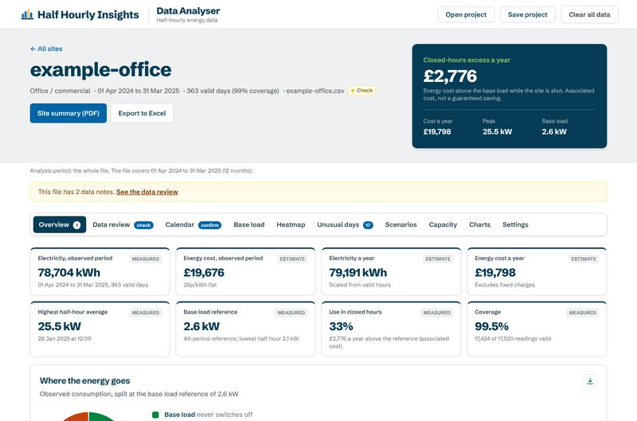
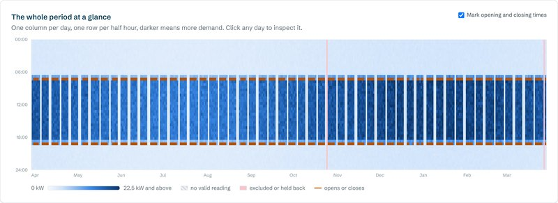
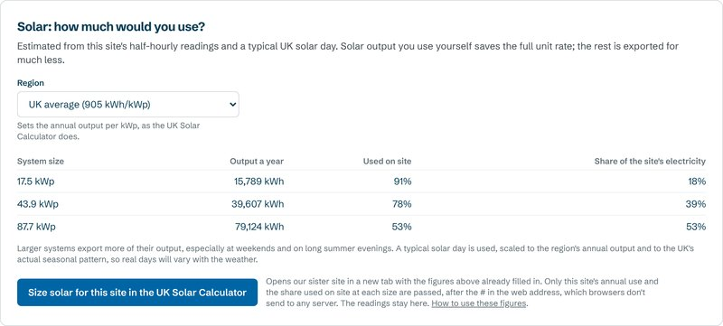

Solar you use on site saves your full unit price; solar you export earns about 5p a unit. So the share you use yourself drives your savings more than almost anything else. This calculator starts at 80%, which can be well out for larger systems. Your half-hourly meter data shows when your site actually uses electricity, and our free sister website, Half Hourly Insights, turns it into a measured figure and sends it back here.
Why the share you use matters so much
At a 25p unit price, every kWh of solar you use saves 25p. Every kWh you export earns about 5p, the flat rate this calculator assumes. A system that exports half its output is worth far less than one whose output you use, even though both generate the same.
How much you use depends on two things: when your site uses electricity, and how big the system is. A small system on a busy building may use everything it makes. A large one on the same building exports much of its output at weekends, on bank holidays and on long summer evenings.
A worked example
Our example office uses about 79,000 kWh a year and is quiet at weekends. Half Hourly Insights measured how much of a solar system's output it would use at different sizes, at UK average sunshine. First-year value at 25p for solar used and 5p for export:
| System | Used on site, measured | Value, measured | Value if you assume 80% |
|---|---|---|---|
| 26 kWp | 88% | £5,364 | £4,983 |
| 53 kWp | 72% | £9,216 | £9,966 |
| 105 kWp | 46% | £13,473 | £19,951 |
For the smallest system, 80% undersells it. For the largest, 80% overstates the first-year value by about £6,500, or 48%. Over 25 years, that is the difference between a system that pays and one that doesn't. The default is a sensible starting point, but it can be wrong in either direction, and your own data tells you which.
This calculator models systems of 50 kWp and above, so this office sits at the bottom of its range. Larger sites follow the same pattern at a bigger scale.
Do you have half-hourly data?
Probably, if you're a business with a sizeable electricity bill. Look at the supply number (MPAN) on your bill. If the top line starts with 00, the supply is settled half-hourly and your meter records every half hour.1 Many smaller sites with a smart or AMR meter record half-hourly readings too, even when the bill shows monthly totals. Industry-wide half-hourly settlement is being rolled out to all meters, with migration due to finish in 2027.2
Half Hourly Insights has a guide to reading your MPAN if you want to check.
How to get it
- Ask your supplier. Since 1 December 2022, business customers with a smart or AMR meter can ask for up to 12 months of historic data free of charge, in a machine-readable format. The supplier must reply within 10 working days.3
- Download it from your supplier's portal. Most large business suppliers offer one. Half Hourly Insights has step-by-step guides for British Gas Business, EDF, E.ON Next, npower Business Solutions and TotalEnergies, and a letter you can send to ask for the file.
- Ask for a year. Twelve months covers summer and winter, weekdays and weekends, which is what a solar estimate needs. A CSV or Excel file is fine.
What Half Hourly Insights does with it
Half Hourly Insights is a separate website, run by the same team, built for reading half-hourly electricity data. Its free analyser takes one file per meter and runs entirely in your web browser: your data isn't uploaded.


For solar, the useful part is on the Capacity tab:

- Load a year of data into the analyser.
- Open the Capacity tab. "Solar: how much would you use?" shows the output, the share used on site and the share of your electricity solar would supply, at several sizes. Choose your region.
- Choose "Size solar for this site". This calculator opens with your figures. Draw or enter your roof, and the "Solar used on site" slider is set from your data for the system that fits.
Only your annual use and the share used on site at a dozen sizes come across, after the # in the web address, which browsers don't send to any server.
What else your data tells you before you fit solar
- Base load: what runs even when the building is closed. On a sunny Sunday, that's all the solar you can use.
- Weekend and holiday use: quiet weekends mean more export from a large system.
- Peak demand: how much headroom your connection has, which matters for the G99 application to your network operator. See planning and grid.
- Evening use on sunny days: the most a battery could move from midday to the evening.
- Waste: electricity used while the building is shut. Cut it first, then size solar for the building you'll have afterwards.
Common questions
Do I have half-hourly data?
If your site has a large electricity supply, almost certainly: profile class 00 on the top line of the supply number on your bill has meant a half-hourly metered supply. Many smaller businesses with a smart or AMR meter also have half-hourly readings, even if they are billed on monthly totals. If in doubt, ask your supplier.
How do I get my half-hourly data?
Ask your supplier, or download it from their online portal. Since December 2022, business customers with a smart or AMR meter can ask their supplier for up to 12 months of historic data free of charge, and the supplier must reply within 10 working days.
Why not just use the calculator's 80% default?
It's a reasonable starting point for a site busy through the working week with a system sized to its daytime demand. It can be well out for a large system, or a site that is quiet at weekends. Measuring it from your own data takes a few minutes and removes the biggest guess in the model.
Is my meter data uploaded anywhere?
No. The Half Hourly Insights analyser runs in your web browser and doesn't upload your file. When it sends figures to this calculator, it passes only your annual use and the estimated share used on site at a dozen system sizes, after the # in the web address, which browsers don't send to any server.
Will my data look different after solar is fitted?
Yes. Your meter records what you import, so solar you use on site disappears from the data. Size a system from a year of data recorded before solar was installed.